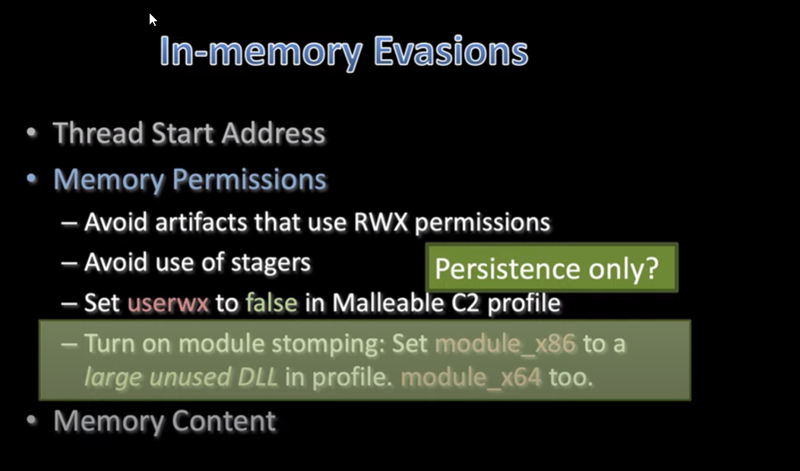

Module Stomping
- Dangers ~
- if you choose a module that one of you process context needs to load later, and instead refrences youre stomped module, it will crash
- if the module is too small, your beacon will crash when trying to write itself into the module space
- you also now have a really odd dll loading everywhere your beacon is loading
- youshould be using this technique on your long haul accessserver
- its good pratice to seperate your persistance callbacks from post exploitation
- also making beacons harder to find in memory

- Memory Content
- Consider setting image_size_x86and image_size_x64values
- this will change the size of image header (how much memory a beacon will request )
- Prependwill offeset beacon payload from natural boundry or region of memory
- Obfuscate -> True
- Cleanup--> True (cleanup reflective dll package)
- sleep_mask --> obfuscate code while asleep, deobfuscate when awake